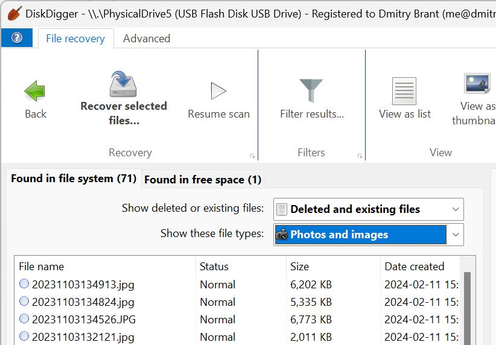

DiskDigger 这十年：一个"挖数据"的工具是怎么长成全能选手的
从一款只能在 Windows 上扫回收站的小工具，到覆盖桌面、移动、Linux 的跨平台数据恢复套件——DiskDigger 的迭代路线里藏着数据恢复这个品类的缩影。
现在打开 DiskDigger 的diskdigger官网，你会看到一整套跨平台的产品矩阵：Windows、macOS、Linux、Android 四个版本并排展示，每个平台都有自己专属的功能文档和商业化策略。但把时间倒回去看，这一路走来其实并不是一开始就规划好的蓝图——更像是开发者跟着用户的真实痛点，一路补丁一路凑，慢慢把一个单功能的小工具拧成了现在这副样子。
起步：先解决一个最朴素的问题
数据恢复这个品类的起源，其实就是人类"手滑删错文件"的普遍焦虑。早期的恢复工具思路都差不多——扫描文件系统的索引表，把那些被标记为"已删除"但数据块还没被覆盖的文件找回来。DiskDigger 最早也是从这一步开始的，它的 Dig Deep 模式就是典型的索引扫描逻辑：依赖 FAT 或 NTFS 的文件分配表，速度极快，能恢复原始文件名和目录结构，但前提很苛刻——文件系统必须完好，而且数据块还没被覆盖。
这个阶段的 DiskDigger 是纯粹的 Windows 工具，界面简单，功能单一。早期用户群体也很窄——主要是那些偶尔误删了重要文件、又不想花大价钱买商业恢复软件的个人用户。
转折点：为什么要加 Dig Deeper
如果说 Dig Deep 是 DiskDigger 的"快速通道"，那 Dig Deeper 就是它的"救命通道"。两个模式的并存，其实折射出开发者对数据恢复本质的一次认知升级：文件系统的索引表不可靠，真正的数据在扇区里。
Dig Deeper 的原理叫"数据雕刻"——完全绕过文件系统，逐扇区扫描整块磁盘，用已知文件类型的特征签名来定位文件边界。这个思路本身不是 DiskDigger 首创的，但把它做成一个对普通用户友好的选项、并且和 Dig Deep 无缝集成在同一个工作流里，是 DiskDigger 做对的事情。
这个功能一出来，DiskDigger 的适用场景立刻翻了几倍。之前格式化过的盘、分区表损坏的盘、甚至从虚拟磁盘映像里挖数据，现在都能处理了。代价是速度慢——几百 GB 的盘可能要扫半小时到一小时以上，但用户愿意等，因为这是很多情况下唯一能救回数据的办法。

有意思的是，DiskDigger 至今仍然把两种模式作为独立选项让用户选择，而不是默认自动组合。官方给出的标准流程是：先跑 Dig Deep，找不到再换 Dig Deeper。这个设计决策背后其实是对用户体验的尊重——毕竟 Dig Deep 快到几分钟出结果，没必要让所有人都等慢的那个。
扩张：从 Windows 到 Android，踩了哪些坑
平台扩张是 DiskDigger 进化史里绕不开的一章，也是暴露了最多产品取舍的一章。
Android 版的出现，直接对标的是手机用户的另一个普遍焦虑："我手机里的照片删了怎么找回来？"但 Android 的系统架构跟 Windows 完全不同，DiskDigger 在 Android 上走了一条很有意思的路线——分成 Basic scan（免 Root）和 Full scan（需 Root）。
Basic scan 不需要 Root 权限，能从系统缓存里挖回一些缩略图级别的照片，对很多轻度用户来说聊胜于无。但真正能恢复完整分辨率照片的 Full scan，必须拿到 Root 权限。这背后是 Android 的安全模型在作祟——没有 Root，App 根本碰不到 /data 分区里的原始数据块。
这里有个细节很能体现 DiskDigger 团队的风格：他们没有像很多 Android 工具那样内置一键 Root 功能（那是灰色地带），而是老老实实教用户怎么用 Magisk、SuperSU 这些主流方案拿 Root，然后处理超级用户管理器的各种弹窗细节——包括误点拒绝怎么办、Zygisk 隐藏了 DiskDigger 怎么办、甚至 SuperSU 日志膨胀占满存储的边缘 case 都覆盖到了。这种"不越界但帮你把剩下的路走完"的态度，在 Android 工具里算是少见的正派。
商业化：Linux 免费，Windows 弹窗，Android 内购
一个工具走到一定阶段总要考虑养活自己。DiskDigger 的商业化策略在同类产品里算比较克制的，而且不同平台用了完全不同的收费方式，这个差异本身就很值得玩味。
Windows 版是"先让你用爽了再收钱"——安装包直接从下载拿，不需要注册也不需要邮箱；扫描免费、预览免费，只有保存文件时才弹购买提示。而且弹窗不是强制阻断，点"继续免费使用"就能继续保存，只是每保存一批弹一次。官方 FAQ 里甚至原话引用了用户抱怨弹窗烦的反馈，然后坦率承认"确实会弹窗，但你可以忽略它"。这种定价逻辑比那些"扫描完才告诉你要付费才能看预览"的工具诚实得多。
Linux 版最特殊——完全免费，连弹窗都没有。官方没解释为什么，但从 Linux 用户群的付费意愿和社区情怀来看，这个决定大概率是有意为之的口碑策略。
Android 版又是另一套——免费版有功能限制（只有 Basic scan + 部分格式），Pro 版通过 Google Play 内购解锁 Full scan、文档/音频/压缩包恢复、FTP 上传和文件擦除。桌面版那种"每次保存弹窗"的机制在 Android 上完全不适用，所以团队干脆换成了功能分级的 Pro 模式。
三套收费机制对应三个平台的用户习惯和生态约束，没有强行统一，这是 DiskDigger 商业化做得比较聪明的地方。
规律：他们一直在死磕什么
把这十年的迭代拉远了看，DiskDigger 团队的优先级其实非常清晰：
第一优先级：覆盖更多的丢失场景。 从最初的误删恢复，到格式化恢复、分区损坏恢复、相机 RAW 格式恢复、虚拟磁盘恢复——每一次功能扩展都是在回答"还有什么情况用户的数据丢了但现有工具救不回来"。Dig Deeper 支持的文件类型数量从最初的几十种涨到了现在的 200+，其中光是相机 RAW 格式就覆盖了 CR2/CR3/ARW/NEF/DNG 等主流品牌，完整的类型清单和各格式的恢复注意事项在diskdigger文档里都能查到。
第二优先级：降低使用门槛。 数据恢复工具的传统痛点是"专业度太高，普通用户看不懂"。DiskDigger 的做法是把复杂的技术细节藏起来，用清晰的向导式流程引导用户——选驱动器、选扫描模式、等结果、勾选保存。甚至连"快速格式化和完整格式化有什么区别"这种基础但关键的概念，都做成了独立的说明文档。
什么一直没管？ 高级用户的深度定制需求。DiskDigger 没有命令行接口，没有 API，没有批量脚本支持，也不提供 RAID 恢复、远程恢复这类企业级场景。它的定位从一开始就是个人用户的应急工具，这个定位至今没变。
预判：照这个路线，下一步大概率是什么
从 DiskDigger 的迭代规律来看，接下来的走向应该不会跳出已有的两条主线——要么是继续扩展恢复场景，要么是继续打磨跨平台体验。
场景扩展方面，SSD 的数据恢复可能是下一个难点。传统机械硬盘上数据块被覆盖才叫真丢失，但 SSD 有磨损均衡（Wear Leveling）和 TRIM 指令，删除操作可能在系统层面就触发了物理擦除，传统的扇区雕刻方法不一定管用。DiskDigger 目前的文档里几乎没提 SSD 专属的恢复策略，这可能是他们接下来要啃的硬骨头。
跨平台方面，macOS 目前还是 Beta 状态，Linux 版虽然免费但功能覆盖不如 Windows 版完整。把这两个平台的功能追平，应该是中期可以预期的动作。
但有一点我觉得不太可能——DiskDigger 不会变成一个企业级的恢复平台。从团队一直以来的决策来看，他们很清楚自己的服务对象是谁，也很克制地在那个范围内把事情做好。在工具软件越来越追求全家桶和订阅制的今天，这种"把一件事做透"的路线反而显得有点稀缺。
写在最后
这篇文章里提到的功能细节、版本差异和使用场景，很多是从官方资料里整理出来的，我顺手把完整的中文使用指南和许可证说明同步到了三个代码仓库——GitHub 上有最新版本，国内访问慢的话可以看 Gitee 的镜像，GitCode 那边是另外一份备份，三份内容保持一致，按需取用就行。